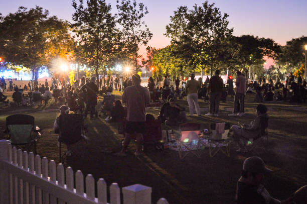
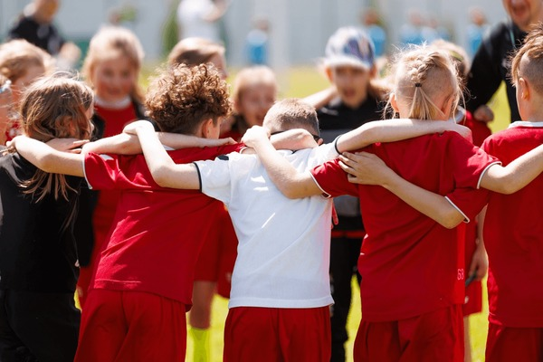

VOLTAR
Informações dos Eventos

- Data: 24 de Junho de 2026
- Descrição: Prepare-se para a mais autêntica celebração junina da comunidade! Com o tema "Bem-vindos ao Brasil", este evento trará toda a alegria e tradição das festas de São João. Desfrute de comidas típicas, música ao vivo com sanfona, danças de quadrilha, brincadeiras tradicionais e um ambiente decorado com bandeirinhas e balões. Uma festa para todas as idades, fortalecendo os laços comunitários e celebrando nossa cultura!
- Categoria: Festival Cultural Comunitário
- Organizadores: Associação Cultural Viva Brasil e Comunidade Local

- Data: 15 e 16 de Julho de 2026
- Descrição: O momento chegou! Junte-se ao "Gaming Tournament 2026", um evento épico de e-sports que reunirá os melhores jogadores da região. Prepare-se para dois dias intensos de competição, estratégia e muita adrenalina. Haverá torneios de diversos jogos populares e prêmios incríveis para os campeões. Traga seus amigos e mostre suas habilidades!
- Categoria: Competição de E-sports / Evento Gamer
- Organizadores: Liga de Gamers Comunitários e Patrocinadores Locais de Tecnologia

- Data: 10 a 12 de Setembro de 2026
- Descrição: Participe da 1ª Conferência Nacional dos Objetivos de Desenvolvimento Sustentável (ODS), um evento voltado para discutir ações em prol de um futuro mais justo e sustentável, com palestras, workshops e painéis de debate sobre temas sociais e ambientais. Uma oportunidade única para aprender, compartilhar e contribuir para um mundo melhor.
- Categoria: Conferência / Sustentabilidade e Desenvolvimento Social
- Organizadores: Comitê Nacional ODS e Instituições de Ensino e Pesquisa